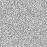

Stefan Zweig wurde als Sohn des wohlhabenden jüdischen Textilunternehmers Moritz Zweig und dessen Gattin Ida Brettauer, Spross eines reichen Kaufmannsgeschlechts aus Hohenems, geboren. Er wuchs gemeinsam mit seinem Bruder Alfred in einer prächtigen Wohnung am Wiener Schottenring auf. Die Familie Zweig war nicht religiös, Zweig selbst bezeichnete sich später als „Juden aus Zufall“. (siehe Wikipedia)